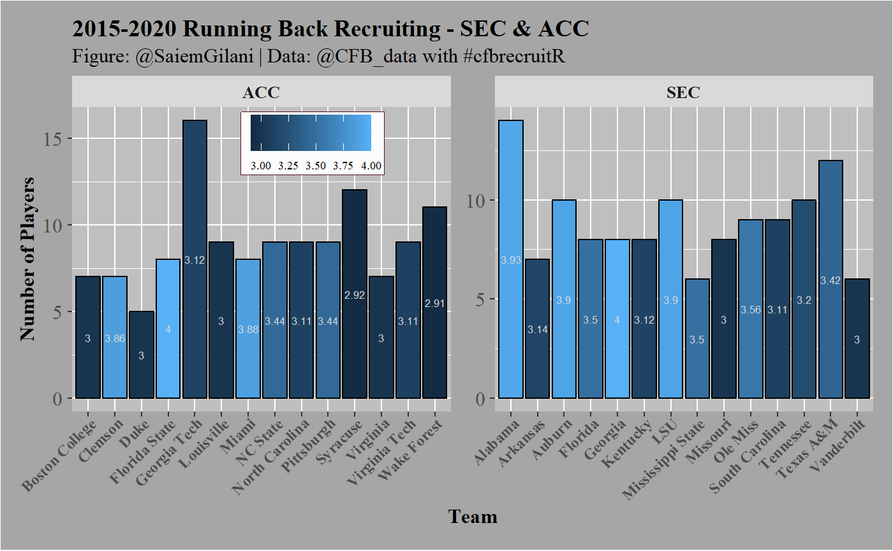

This is a basic example which shows you how to solve a common problem:
Let’s say that we are interested in seeing how teams in either the SEC or ACC fared in running back recruiting from 2015-2020. We could gather the information on each conference using the cfb_position_recruiting function, like so:
sec_positions <- cfb_position_recruiting(start_year=2015, end_year = 2020, conference = 'SEC') acc_positions <- cfb_position_recruiting(start_year=2015, end_year = 2020, conference = 'ACC') sec_rbs <- sec_positions %>% filter(positionGroup == "Running Back") %>% arrange(desc(averageStars)) acc_rbs <- acc_positions %>% filter(positionGroup == "Running Back") %>% arrange(desc(averageStars)) rbs <- rbind(sec_rbs,acc_rbs) print(rbs)
## team conference positionGroup averageRating totalRating commits
## 1 Georgia SEC Running Back 0.9415500 7.5324 8
## 2 Alabama SEC Running Back 0.9296071 13.0145 14
## 3 Auburn SEC Running Back 0.9126500 9.1265 10
## 4 LSU SEC Running Back 0.9235500 9.2355 10
## 5 Ole Miss SEC Running Back 0.8931778 8.0386 9
## 6 Florida SEC Running Back 0.8956125 7.1649 8
## 7 Mississippi State SEC Running Back 0.8868833 5.3213 6
## 8 Texas A&M SEC Running Back 0.8864333 10.6372 12
## 9 Tennessee SEC Running Back 0.8682900 8.6829 10
## 10 Arkansas SEC Running Back 0.8772857 6.1410 7
## 11 Kentucky SEC Running Back 0.8686875 6.9495 8
## 12 South Carolina SEC Running Back 0.8800222 7.9202 9
## 13 Missouri SEC Running Back 0.8418875 6.7351 8
## 14 Vanderbilt SEC Running Back 0.8433333 5.0600 6
## 15 Florida State ACC Running Back 0.9323875 7.4591 8
## 16 Miami ACC Running Back 0.9242375 7.3939 8
## 17 Clemson ACC Running Back 0.9206857 6.4448 7
## 18 NC State ACC Running Back 0.8912667 8.0214 9
## 19 Pittsburgh ACC Running Back 0.8809667 7.9287 9
## 20 Georgia Tech ACC Running Back 0.8474875 13.5598 16
## 21 North Carolina ACC Running Back 0.8684778 7.8163 9
## 22 Virginia Tech ACC Running Back 0.8571111 7.7140 9
## 23 Boston College ACC Running Back 0.8398143 5.8787 7
## 24 Duke ACC Running Back 0.8468600 4.2343 5
## 25 Louisville ACC Running Back 0.8534778 7.6813 9
## 26 Virginia ACC Running Back 0.8453714 5.9176 7
## 27 Syracuse ACC Running Back 0.8377333 10.0528 12
## 28 Wake Forest ACC Running Back 0.8381364 9.2195 11
## averageStars
## 1 4.000000
## 2 3.928571
## 3 3.900000
## 4 3.900000
## 5 3.555556
## 6 3.500000
## 7 3.500000
## 8 3.416667
## 9 3.200000
## 10 3.142857
## 11 3.125000
## 12 3.111111
## 13 3.000000
## 14 3.000000
## 15 4.000000
## 16 3.875000
## 17 3.857143
## 18 3.444444
## 19 3.444444
## 20 3.125000
## 21 3.111111
## 22 3.111111
## 23 3.000000
## 24 3.000000
## 25 3.000000
## 26 3.000000
## 27 2.916667
## 28 2.909091You can also create a plot:
ggplot(rbs ,aes(x = team, y = commits, fill = averageStars)) + geom_bar(stat = "identity",colour='black') + xlab("Team") + ylab("Number of Players") + labs(title="2015-2020 Running Back Recruiting - SEC & ACC", subtitle="Figure: @SaiemGilani | Data: @CFB_data with #cfbrecruitR")+ geom_text(aes(label = round(averageStars,2)),color="grey85", size = 2.3, position = position_stack(vjust = 0.5))+ scale_color_gradient2(low = "red",midpoint = 3,mid = "blue", high = "green",space="Lab")+ facet_wrap(~conference,ncol=2,scales='free')+ theme(legend.title = element_blank(), legend.text = element_text(size = 7, margin=margin(t=0.2,r=3,b=0.2,l=3,unit=c("mm")), family = "serif"), legend.background = element_rect(fill = "grey99"), legend.key.width = unit(.5,"cm"), legend.key.size = unit(.5,"cm"), legend.position = c(0.3, 0.88), legend.margin=margin(t = 0.4,b = 0.4,l=0.1,r=2.7,unit=c('mm')), legend.direction = "horizontal", legend.box.background = element_rect(colour = "#500f1b"), axis.title.x = element_text(size = 12, margin = margin(0,0,1,0,unit=c("mm")), family = "serif",face="bold"), axis.text.x = element_text(size = 9, margin=margin(0,0,1,0,unit=c("mm")), face="bold",family = "serif", angle = 45, hjust = 1), axis.title.y = element_text(size = 12, margin = margin(0,0,0,0,unit=c("mm")), family = "serif",face="bold"), axis.text.y = element_text(size = 12, margin = margin(1,1,1,1,unit=c("mm")), family = "serif"), plot.title = element_text(size = 14, margin = margin(t=0,r=0,b=1.5,l=0,unit=c("mm")), lineheight=-0.5, family = "serif",face="bold"), plot.subtitle = element_text(size = 12, margin = margin(t=0,r=0,b=2,l=0,unit=c("mm")), lineheight=-0.5, family = "serif"), plot.caption = element_text(size = 12, margin=margin(t=0,r=0,b=0,l=0,unit=c("mm")), lineheight=-0.5, family = "serif"), strip.text = element_text(size = 10, family = "serif",face="bold"), panel.background = element_rect(fill = "grey75"), plot.background = element_rect(fill = "grey65"), plot.margin=unit(c(top=0.4,right=0.4,bottom=0.4,left=0.4),"cm"))
